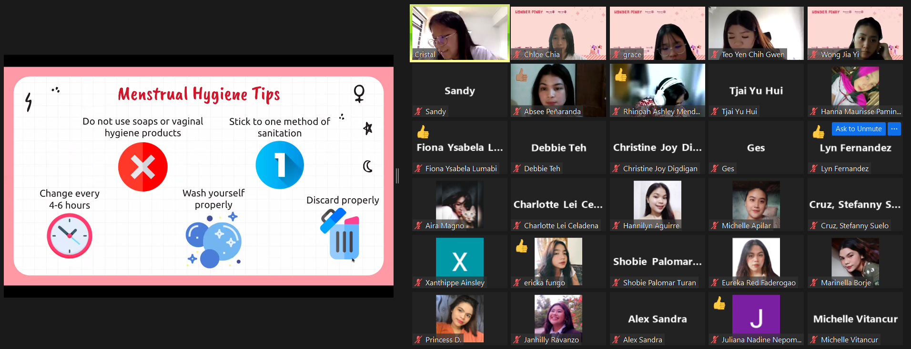
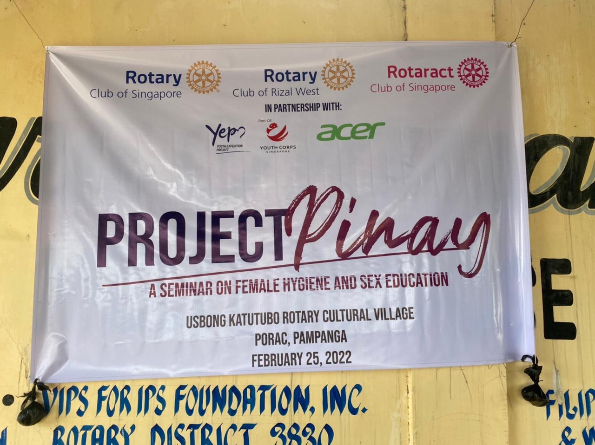
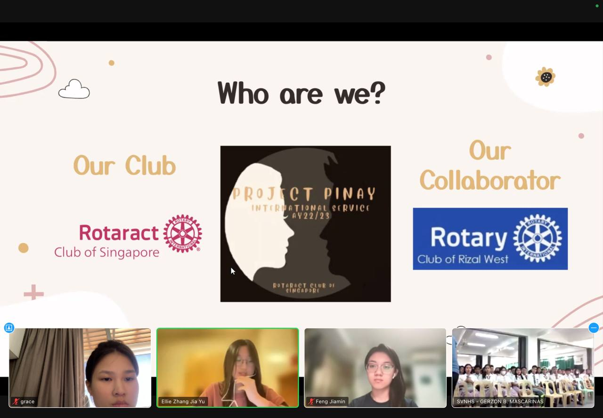

PAST RUNS
Founded in 2021, the project has since been continued by successive teams & is currently in its fifth edition. Through physical lessons & interactive games, we hope to introduce the concept of sexual education & puberty in a light-hearted manner such that youths are able to better understand & be receptive to such sensitive topics.

21/22
Our first virtual run

22/23
Our second run

23/24
Our third time

24/25
Our first physical run